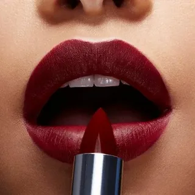
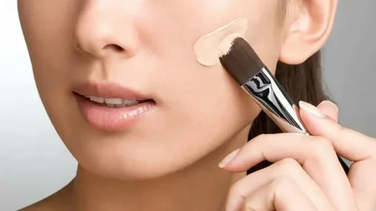
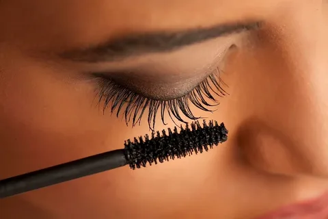
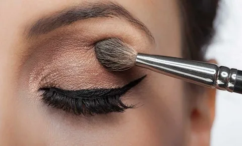

Makyaj, güzellik ve kişisel bakımın önemli bir parçasıdır. Makyaj malzemeleri, cilt tipinize ve ihtiyaçlarınıza göre seçilerek, kişisel stilinizi yansıtan mükemmel bir görünüm elde etmenize yardımcı olur.
Rujlar, dudaklara renk ve dolgunluk kazandırmak için kullanılır. Makyajın vazgeçilmez ürünlerinden biridir ve farklı renk ve formülasyon seçenekleriyle sunulur. Kalıcı, mat ya da ıslak görünümlü rujlar gibi birçok çeşidi bulunmaktadır.
Fondöten, cilt tonunu eşitlemek ve cilt kusurlarını kapatmak için kullanılır. Farklı kapatıcılık seviyeleri, formülasyonlar (sıvı, krem, pudra) ve cilt tiplerine özel seçeneklerle bulunur.
Maskara, kirpikleri belirginleştirir, uzatır ve hacim kazandırır. Farklı türleri vardır, örneğin suya dayanıklı maskaralar veya hacim artırıcı maskaralar.
Göz farı, gözlere renk ve derinlik katmak için kullanılır. Mat, parlak, sedefli ve simli seçeneklerle göz alıcı makyajlar yapabilirsiniz.
